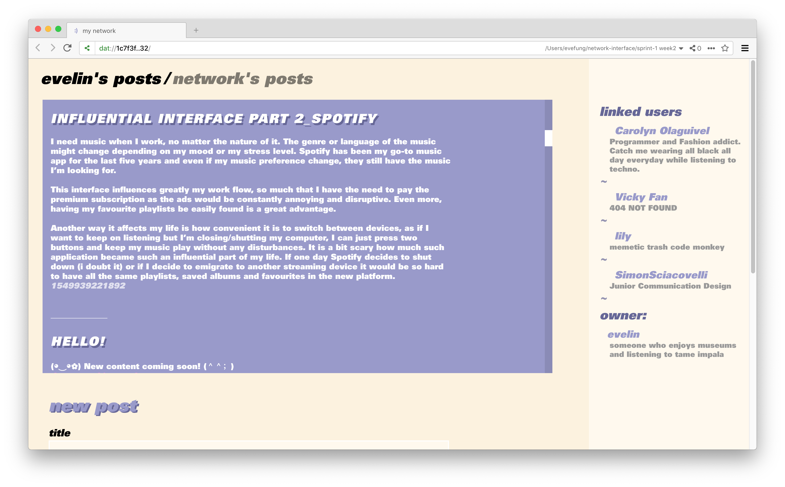
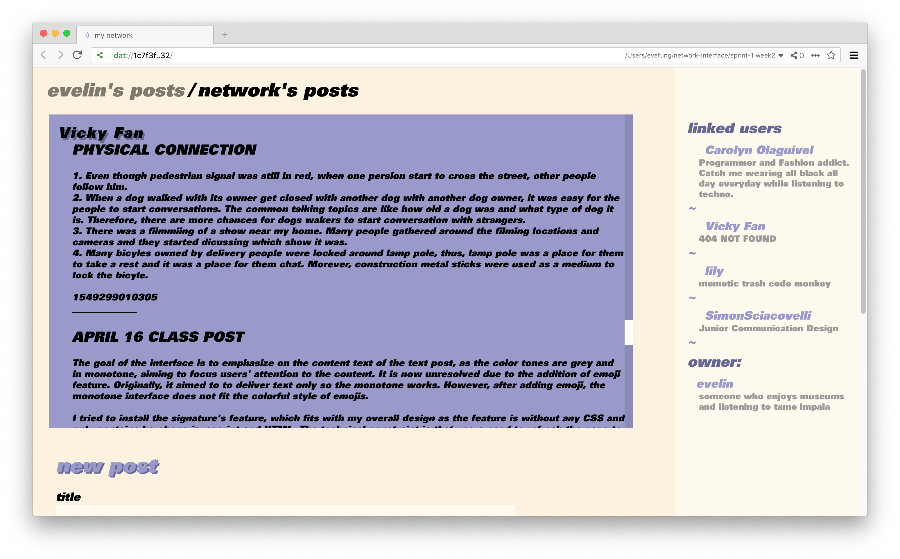
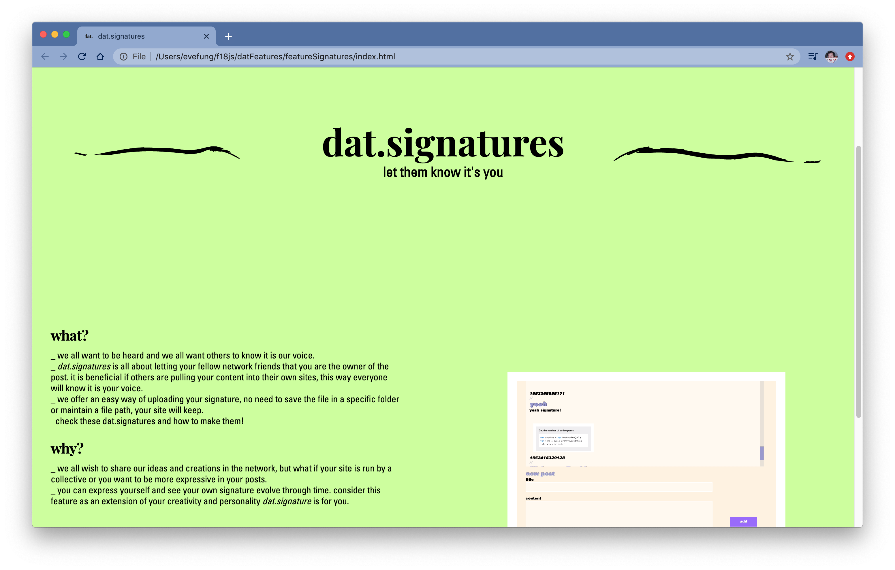
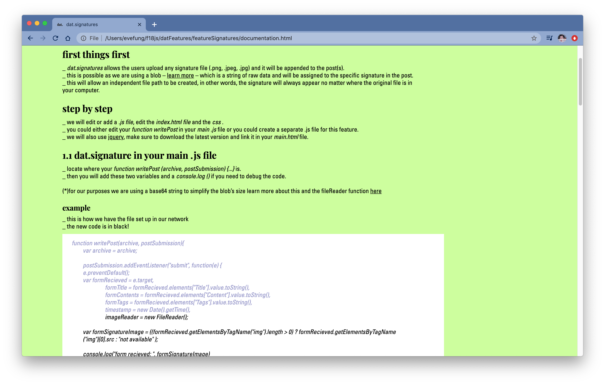
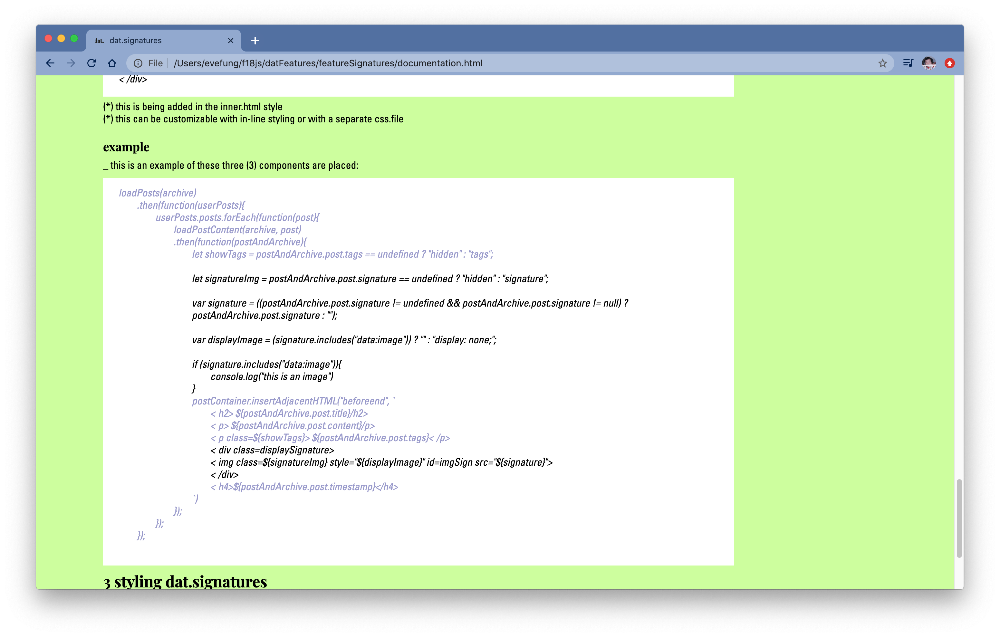

This project was a semester long process for ‘Collab: Social Networks’, a class focused a hands-on look at how social networks and user interfaces influence our understanding of content. The goal for the class was to build a prototype P2P social network using Beaker Browser. This project tested the barriers of what is a social network, the necessities of users and what you can offer as a ‘developer’.
 Apart from customising the look of my own page, I developed two features that can user from the network can then add. dat.signatures lets the user create a signature that would work as a mark or identifier once other users pull your content. dat.emoticons allows users to express themselves through another medium: text based emoticons.
  